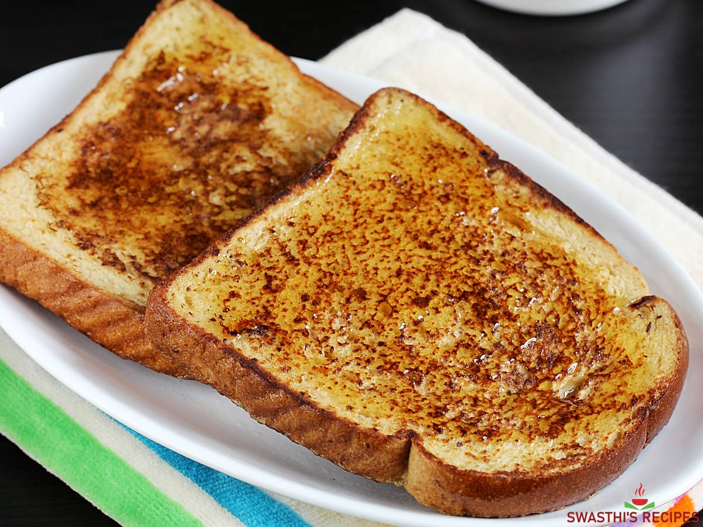

Immaculate Toast

Immaculate Toast Recipe
Description
An easy to prepare toast for the rich and wealthy
Laced with gold chips and Avocado cream, this rich and expensive toast can be prepared in under 10 MINUTES!
Ingredients can be sourced with various exquisite markets
Ingredients
- 2 x Toast
- 10 tbsp 24K Gold chips
- 5 x Avocado
Steps
- Pound the avocado and mix well to formt he cream
- Apply the avocado cream and gold chips on the toast and serve